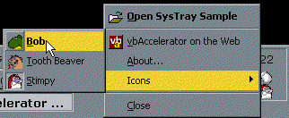

VB5 SysTray With Icons Demonstration (38K)
VB5 SysTray With Icons Demonstration (38K)
 VB6 SysTray With Icons Demonstration (33K)
VB6 SysTray With Icons Demonstration (33K)
 21 Mar 2000
21 Mar 2000
Added the Win32 API call SetForegroundWindow before showing the SysTray menu - this ensures that the menu dismisses when the user clicks off the menu onto (for example) the desktop, whereas before it used to stick.
Fixed problem on systems with Large Fonts set. The code hardcoded a twips/pixel value of 15 into the message values responded to from the SysTray. Now the code uses VB's ScaleX method to get the correct message value so it works on all systems.
 PopupMenu DLL - Create Unlimited Popup Menus
PopupMenu DLL - Create Unlimited Popup Menus
 vbAccelerator ImageList Control and Class v2.0
vbAccelerator ImageList Control and Class v2.0

Using Popup Menu ActiveX DLL to create SysTray Menus with Icons
Create Elegant SysTray applications with very little work!
This sample shows how to use the newly introduced ShowPopupAbsolute method of the PopupMenu ActiveX DLL to implement a icon menu in the SysTray.
The code expands upon the "SysTray the Easy Way" sample. Essentially this project uses a VB form as a class which exposes an easy to use interface for adding your application to the system tray and responding to SysTray events.